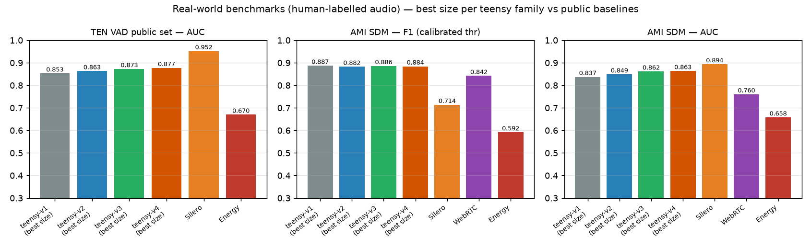

All systems evaluated on the same 10 ms frame grid with human labels. Operating points calibrated on held-out AMI dev meetings for every detector (WebRTC aggressiveness swept 0–3; Silero and Energy at stock settings). AUC computed on raw probabilities where available. Test sets: the TEN VAD public set (30 recordings) and 8 AMI SDM meetings (distant mic); neither was used in training or calibration.

Best size per family vs public baselines. Silero ranks best by AUC (87× larger model); teensy-v5 wins the calibrated operating point on AMI and passes FlashVAD's published TEN AUC at a fraction of the size.
| model | params | KB | TEN F1* | TEN AUC | AMI F1 | AMI AUC | µs / 20 ms |
|---|---|---|---|---|---|---|---|
| teensy-v1 | 20,449 | 87 | 0.877 | 0.848 | 0.887 | 0.835 | 64 |
| teensy-v2 | 20,449 | 87 | 0.890 | 0.868 | 0.880 | 0.848 | 63 |
| teensy-v3-80k | 80,373 | 321 | 0.894 | 0.877 | 0.882 | 0.861 | 66 |
| teensy-v7-GRU96 | 41,809 | 169 | 0.8992 | 0.8934 | 0.9153 | 0.9182 | 37.9 |
| teensy-v6-a1 (250 ms) | 24,441 | 96 | 0.9081 | 0.8834 | 0.8842 | 0.8683 | 64 |
| teensy-v6-a2 (250 ms) | 49,249 | 204 | 0.9081 | 0.8870 | 0.8822 | 0.8726 | 66 |
| teensy-v6-c (mining) | 20,449 | 87 | 0.8957 | 0.8799 | 0.8853 | 0.8594 | 63 |
| teensy-v5 (20k) | 20,449 | 87 | 0.8953 | 0.8760 | 0.8836 | 0.8579 | 64 |
| teensy-v5-40k | 39,609 | 162 | 0.8963 | 0.8810 | 0.8853 | 0.8620 | 64 |
| teensy-v5-80k | 80,373 | 321 | 0.9016 | 0.8877 | 0.8845 | 0.8622 | 63 |
| teensy-v5-100k | 99,593 | 396 | 0.9008 | 0.8865 | 0.8823 | 0.8596 | 63 |
| teensy-v4 (20k) | 20,449 | 87 | 0.892 | 0.871 | 0.884 | 0.861 | 63 |
| teensy-v4-40k | 39,609 | 161 | 0.892 | 0.875 | 0.883 | 0.862 | 65 |
| teensy-v4-80k | 80,373 | 321 | 0.896 | 0.880 | 0.880 | 0.862 | 66 |
| teensy-v4-100k | 99,593 | 396 | 0.892 | 0.875 | 0.882 | 0.861 | 64 |
| teensy-v4-qat (int8) | 20,449 | 28 | 0.894 | 0.876 | 0.884 | 0.862 | 92 |
| teensy-v4-40k-qat (int8) | 39,609 | 47 | 0.892 | 0.877 | 0.881 | 0.862 | 99 |
| teensy-v4-80k-qat (int8) | 80,373 | 88 | 0.894 | 0.877 | 0.882 | 0.863 | 113 |
| teensy-v4-100k-qat (int8) | 99,593 | 107 | 0.891 | 0.876 | 0.881 | 0.862 | 120 |
| Silero VAD (teacher) | 1,774,000 | 2,200 | 0.938 | 0.952 | 0.714 | 0.894 | 89 |
| WebRTC VAD (agg 0) | ~6k (C) | ~50 | n/a | n/a | 0.842 | 0.760 | 2 |
| Energy VAD (adaptive) | — | — | — | 0.670 | 0.592 | 0.658 | 7 |
*TEN F1 at best-F1 threshold (upper bound) — like-for-like with FlashVAD's published TEN numbers (F1 0.889 / AUC 0.882 / FAR 26.3%). AMI F1 at AMI-dev-calibrated thresholds. Speed = full streaming path, median µs per 20 ms telephony chunk, one core of an Apple M2 Pro.